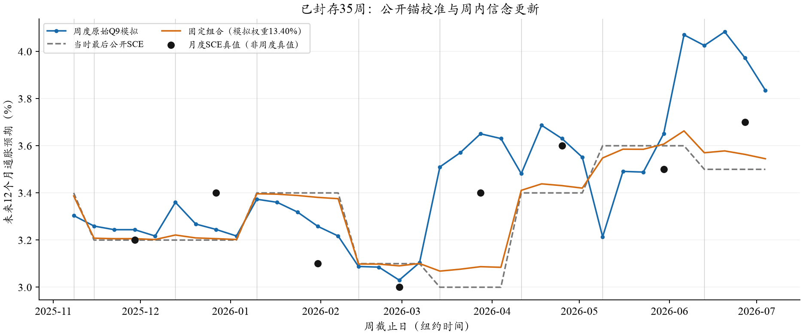
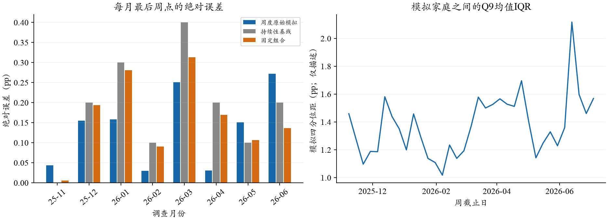

触发停止的是一次HTTP403（PermissionDeniedError）。原始日志没有保存错误正文，不能仅凭错误类区分权限、预算或内容拦截。之后的只读密钥检查确认该key累计额度上限$100、使用约$100.05、剩余0；这与停止相符。上限是整把key的累计限制，并不是这批$15的预算。先提高key限额，再显式处理已登记403与接续；本页没有自动续跑。
主请求已尝试10,731次，补批26次，共10,757次物理尝试。还有3,369个主位置从未发送，没有未知在途请求。费用实报$6.7712，另有$0.0874未知费用预留；剩余批预算约$8.14。35个封存周通过原始账本哈希、300户固定身份、前驱状态与字段时间检查。Q8、Q9各有2个户周在一次补跑后仍沿用此前字段，未删除个体。
评价范围为2025-11至2026-06，共8个月。原始模拟MAE为0.1365pp，持续性为0.1875pp，下降27.2%；8个月中有5个月绝对误差更低。同周期先验保持不动的MAE为0.1814pp，这个对照有助于区分校准本身与校准后的模型更新。
| 方法（相同8个月） | MAE / pp | RMSE / pp | 平均偏差 / pp |
|---|---|---|---|
| 原始周度模拟 | 0.1365 | 0.1631 | +0.0978 |
| 当时公开SCE持续性 | 0.1875 | 0.2208 | -0.0625 |
| 同周期合成先验保持不动 | 0.1814 | 0.2187 | -0.0698 |
| 固定A早48月MSE组合 | 0.1621 | 0.1876 | -0.0410 |
| 冻结SCE+CPI | 0.1769 | 0.2083 | -0.0163 |
| 冻结SCE+CPI+模拟 | 0.1611 | 0.1899 | -0.0028 |
固定组合沿用A早48个月冻结的模拟权重0.133976，没有在这8个月重新选权。其MAE高于原始模拟：这段样本中，较小的模拟权重会将有效的变化信号拉回上期值。该现象不能据此改变本批冻结参数，亦不能预断剩余三个月。

2025年12月、2026年1—4月优于持续性；11月、5月、6月不如持续性。3月预测3.651%、真值3.4%，仍然高估，但比照抄3.0%的误差小；4月预测3.631%、真值3.6%，接近调查中心。6月预测3.972%、真值3.7%，为目前最大的绝对误差0.272pp。8个月有7个月偏高，平均偏差+0.098pp，因此不能只呈现平均收益。

| 月份 | SCE / % | 模拟 / % | 原始误差 / pp | 持续性误差 / pp | 组合误差 / pp |
|---|---|---|---|---|---|
| 2025-11 | 3.200 | 3.244 | 0.044 | 0.000 | 0.006 |
| 2025-12 | 3.400 | 3.245 | 0.155 | 0.200 | 0.194 |
| 2026-01 | 3.100 | 3.258 | 0.158 | 0.300 | 0.281 |
| 2026-02 | 3.000 | 3.030 | 0.030 | 0.100 | 0.091 |
| 2026-03 | 3.400 | 3.651 | 0.251 | 0.400 | 0.313 |
| 2026-04 | 3.600 | 3.631 | 0.031 | 0.200 | 0.169 |
| 2026-05 | 3.500 | 3.651 | 0.151 | 0.100 | 0.107 |
| 2026-06 | 3.700 | 3.972 | 0.272 | 0.200 | 0.137 |
主点距目标数据发布有10—13天；至少14天面板的原始MAE为0.1416pp，至少21天面板为0.1262pp。所有提前量都按全47周原计划先选日期，再检查已完成部分，未按误差选周。三个面板复用相同8个月，不是三批独立证据，不能因21天数值更好就更换主指标。
这是一条固定300户、发布后校准先验、发布之间由本人模拟信念递推的轨迹。没有新旧受访者轮换，也没有Normal扩展。300户不是每月1200个独立受访者。人口和文本版本、模型知识边界沿原协议保留。本次8个月结果优于持续性，但只能称阶段性线索；不得与完整11月的月度方案直接比较成“周度方法优胜”。
已封存35周不应重跑。两次字段保留已登记且已经影响后继状态，不能随意改写历史。需要接续的是7月10日尚未发送的69个位置及后续11周的3300个位置；已尝试的403不能当作普通网络错误悄悄自动重发，需要单独确认处理方式。
另发现冻结最终评价器假设执行计划含target_reference_period与anchor_published_date，而实际紧凑计划省略了这两个可推导字段。新建兼容入口从纽约截止日与cycle_key补出元数据，原计划、研究输入和冻结评价器均保持不变。该问题影响离线评价启动，不影响已经生成的回答。
错误码说明参考OpenRouter官方文档；本项目的key限额判断来自额外只读账户查询。完整数字：汇总JSON、8月CSV、35周CSV、运行对账。未新增模型调用、未重新拟合任何参数、未覆盖旧归档。